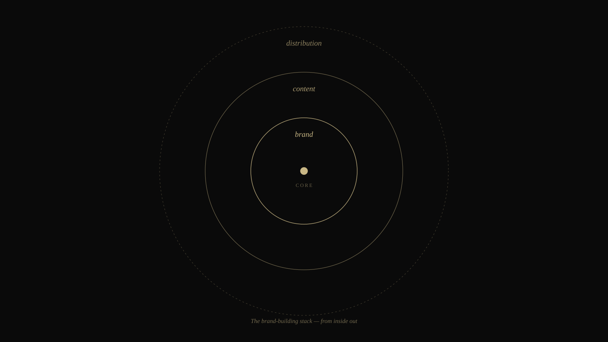
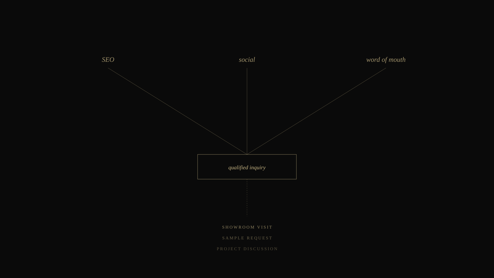

A branding agency playbook for marble companies in India.
A working playbook for marble companies that want to be asked for by name — not quoted alongside ten others on WhatsApp. Strategy, content, photography and discoverability for marble brands in India and abroad.
India is the largest marble exporter in the world. Roughly 271,796 shipments left the country last year — more than Turkey and China combined. Most of those shipments came from quarries within a four-hour drive of where we're sitting in Udaipur. And yet, ask any architect in Mumbai or any developer in Dubai to name three Indian marble brands, and they'll struggle. They know Italian houses by name. They know one or two Indian giants. The other six thousand exporters live in a category called "Indian marble" — undifferentiated, interchangeable, quoted on price.
That's the gap we work in. Not because Indian marble is short on quality — it isn't — but because almost none of it has been built into a brand. The companies doing well are the ones that sorted this out early. The ones still competing on rupees per square foot are running out of margin to compete with.
This page is a working playbook. It's how we think about brand building for marble companies — what we believe, what we've seen work, and what we've watched fail. If you're a quarry owner, a processor, an exporter, or a showroom operator, the question worth asking yourself by the end of this page is the same one we ask in our first meeting: what will buyers describe about you when they describe you to someone else? If you can't answer that in one sentence, the brand isn't built yet.
Why the marble category is brand-starved
Look at the way the industry sells. A buyer — say, an interior designer in Bangalore working on a luxury residence — sends out a query. Within a day, ten WhatsApp messages return. They all have rate cards. They all have a few photographs. They all promise "premium quality." The designer compares prices, asks for samples, and chooses based on the discount someone offers in week three.
Nothing about this process gives the seller any advantage. It's a commodity transaction in a category that genuinely isn't a commodity. Two marble blocks from the same quarry can finish differently, behave differently in installation, and look different on a wall. But because the seller's brand is invisible, the buyer has no way to know that — so they default to price.
The companies winning this category have done one thing differently: they've made themselves describable. The designer doesn't just remember "the supplier from Kishangarh." She remembers "the team that finishes Statuario consistently, photographs every slab before shipping, and has that Instagram with the showroom walkthrough." That memory — that mental shortcut — is what a brand actually is. Everything else is decoration.
The three layers of a marble brand
We think of brand building as three concentric layers. The inner layer is what you stand for. The middle layer is the content that demonstrates it. The outer layer is the discoverability that gets you found. They have to be built in order. Skip the first one and the next two are decoration on a void.

Brand → Content → Distribution. Built inside out, never the reverse.
Layer one: the positioning
Before any logo, any website, any photoshoot — what's the one thing your company is going to be famous for? Not "premium marble." Everyone says that. Famous for what, specifically? Maybe it's finish consistency at scale — the only processor in your region that delivers the same Statuario polish across a 4,000 sqft project. Maybe it's direct-from-quarry traceability — every slab tagged to the block it came from, photographed before shipping. Maybe it's Italian-import expertise — a curator's eye for the best European stone, brought into India without the markup of three middlemen.
One company we worked with had been pitching themselves as "premium luxury marble." We sat with them for three weeks and figured out something nobody else in their region was doing — they were the only ones with a fully digitised slab catalogue, photographed under controlled lighting, with reservation-and-hold logistics built in for designers working on long timelines. That became the positioning. Six months later, designers were specifically asking for "the company with the slab reservation system" — by category descriptor, before anyone remembered the name. That's brand starting to do its job.
Layer two: the content
Once positioning is sharp, content becomes obvious. Most marble companies post randomly — a slab today, a festival graphic tomorrow, a quote about excellence the day after. That's not a content strategy. That's noise. A content strategy answers one question: what does someone need to see to believe our positioning?
If your positioning is finish consistency, every post should reinforce that — close-ups of polish quality, time-lapses of identical slabs being processed back-to-back, project completion shots showing seamless walls. If your positioning is traceability, every post is a quarry photograph paired with the slab it became — a visible thread from rock to room. The content isn't decoration. It's evidence.
Here's what we've seen actually move B2B inquiries in the marble category, in rough order of impact:
Project (installation) photography — finished walls, floors, vanities, with the slab and finish credited. This is the single highest-converting type of content because it lets a designer imagine the same outcome in their own project.
Showroom walkthroughs and reels — short videos that move through your stock with credits and pricing tiers. These get screenshotted and shared in architect group chats.
Quarry and factory footage — proof of source, proof of scale, proof of process. Particularly important for export buyers who can't visit easily.
Finish guides and material education — written articles or short videos explaining the difference between honed, polished, leather, and brushed finishes; or how Italian Statuario differs from Indian Statuario. This positions you as a teacher, not a vendor.
Architect-facing PDFs and printed catalogues — sounds analogue, but architects still print and pin. A well-designed catalogue is a quiet ambassador in offices you'll never visit.
The mistake most companies make is treating Instagram and a few WhatsApp broadcasts as their "marketing." That's a starting point, not a strategy. The full capabilities stack we deploy for a marble brand spans website, photography, social, paid, SEO and trade collateral — all working from the same positioning so the brand compounds rather than scatters.
Layer three: discoverability
Even great content has to be findable. The discoverability layer is where most marble companies leak the most opportunity, because they think social media equals discoverability. It doesn't. Social is one of three channels — and arguably not the most valuable for B2B marble.

Three sources, one filter, three outcomes. All three sources need attention.
The three discoverability channels that matter, in B2B marble:
Search. When an architect in Mumbai needs "Italian Statuario suppliers Mumbai delivery", where does she go? Google. Where does the lead go? To whoever ranks in the top three results plus the local map pack. That's it. If you don't show up there, you don't exist for that inquiry. Ranking requires a website that's structured for those searches, articles that target those exact phrasings, and a properly maintained Google Business Profile with photos, reviews, and accurate hours.
Social. Instagram, mostly. LinkedIn for export buyers and B2B-heavy projects. Reels and reels' equivalents on YouTube Shorts and Pinterest. The compounding effect of social is that one good piece of content seeds dozens of WhatsApp forwards inside the architect community — a piece of distribution that is invisible to dashboards but very visible in the inquiries that arrive three weeks later citing "I saw your reel."
Word of mouth, structured. The most powerful channel in marble is referral, but most companies leave it to chance. We treat it as an asset to be designed: a referral programme for designers, a follow-up sequence after a project completes, a printed sample folder with shareable QR codes, a quarterly newsletter to past clients with new arrivals. Structured WOM is the difference between getting one referral a quarter and getting one a week.
For broader context on where the Indian stone industry is heading — supply trends, export markets, emerging design demands — IBEF's industry coverage is a useful reference, and the historical context of Makrana is worth reading for any company building a heritage-led brand. Knowing the shape of the industry you're in is the cheapest competitive advantage available, and most operators don't read enough of it.
Marble is a commodity until you make it a name. Then it's a category of one.
— A working principle in our marble brand engagements
What we deliver — the full stack
We don't sell branding as a deliverable. We sell brand building as an outcome — and that outcome requires the full stack moving together. Here's what that practically means for a marble client engaging us:
Strategy & identity
Three to four weeks of close work. Quarry visits, showroom walkthroughs, conversations with sales, with founders, with a sample of past buyers. We come out the other side with a positioning document, a brand narrative, a competitive map, and an identity system — logo, marks, type system, colour palette, photography direction, brand voice and writing guidelines. This is the foundation. Everything else builds on it.
Content & reach
Where most agencies stop. We don't. The same team that wrote your positioning also runs the content production: stone photography, showroom and quarry shoots, project documentation, Instagram and Reels, YouTube long-form (factory tours, finish education, founder interviews), architect-facing print collateral, and a quarterly editorial cadence on your website that quietly builds search authority while the social handles the visibility. Our photography studio handles all the in-house image work — F&B-grade lighting brought into a stone showroom is the visual upgrade that separates a brand from a vendor.
Growth & discovery
Website built for the way buyers actually search. SEO scoped specifically for marble keywords (national, regional, and product-type queries). Google Business Profile maintained. Meta and Google paid layers, scoped tightly to architects, designers and project decision-makers — not retail traffic. CRM and lead-routing setup so a sample request from Mumbai goes to the right rep within an hour. Quarterly performance reviews where we sit with you and look at what's working, what isn't, and what to change.
The whole stack runs from one studio. That matters more than people realise. When the website, the social, the photography and the paid campaigns are all designed by people who sat in the same room when the positioning was decided, the brand compounds. When they're scattered across five vendors, the brand fragments — and you spend a third of your time playing translator.
The regions we work with
Our office is in Udaipur, but our marble work travels. The bulk of our engagements involve in-person visits to Kishangarh (the country's largest marble trading hub), Makrana (heritage white marble, including the stone of the Taj Mahal), Banswara (green and Italian-import processing), Rajsamand, and processing units across the broader Rajasthan stone belt. We also work with exporters serving the United States, Australia, Canada, the United Kingdom and the GCC — which together account for the majority of India's marble export volume.
We aren't a generalist agency that took on a marble client once. We've built the playbook because the category is poorly served, because Rajasthan is our home, and because the work compounds — the second marble engagement is faster than the first, and the third faster still.
— Frequently asked
Questions we hear often.
How long does it take for a marble brand to start ranking on Google?
For local searches like "marble suppliers Kishangarh" or "marble showroom Udaipur", most well-built brands begin appearing on page one within three to five months. National searches like "Italian marble exporters India" typically take six to nine months. The bottleneck is rarely the SEO itself — it's having content that genuinely deserves to rank. A site with twelve photographs and a contact form will struggle. A site with thirty articles, finish guides, project case studies, and verified Google Business listings will move faster than the founder expects.
Is social media really worth it for a B2B marble company?
Yes — but only if you treat it as a portfolio, not a billboard. Architects and interior designers screenshot Instagram posts of finishes, projects, and quarry footage and send them to clients in WhatsApp. That screenshot, three weeks later, becomes a quote request. Reels of slabs being polished, time-lapses of installations, and short videos explaining finishes do real B2B work. Generic motivational quotes and festival posts do not. The platform isn't the question. The content is.
What's the difference between a marble company that brands itself well and one that doesn't?
Margins. The marble company that has built a brand can quote a higher price for the same slab and not lose the sale, because the buyer is buying confidence — that the colour matches what was shown, that the installation will be supervised, that the finish is consistent. The unbranded competitor has to compete on rupees per square foot every single time. Over five years, the difference in net margin between these two operations is significant — and entirely a function of perceived authority, not stone quality.
Do you work with marble companies outside Rajasthan or only locally?
We work India-wide, and with exporters who serve overseas markets. Our office is in Udaipur, but most of our marble work involves shoots, conversations and in-person reviews at quarries and processing units across Rajasthan, Gujarat, Andhra Pradesh and Karnataka. For exporters, the work extends to building English-first websites, content for trade-show outreach, and discoverability for searches originating in the United States, the United Kingdom, Australia and the Middle East — which is where most of India's marble exports go.